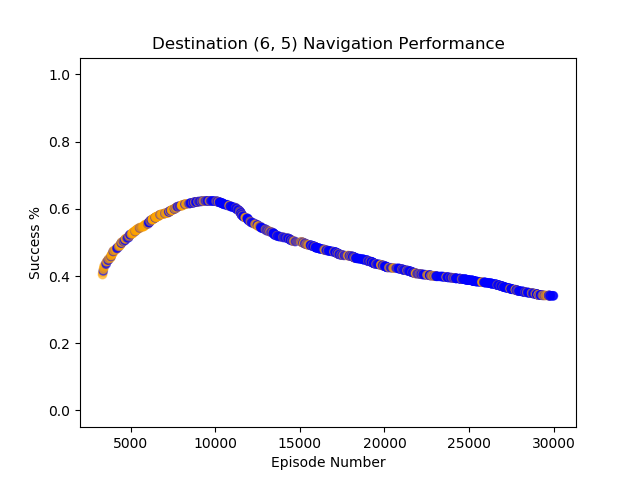
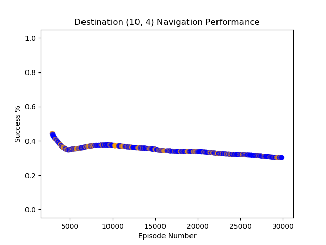
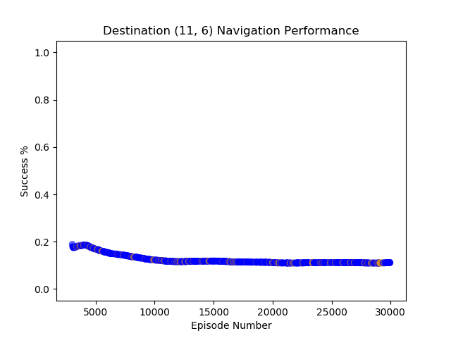
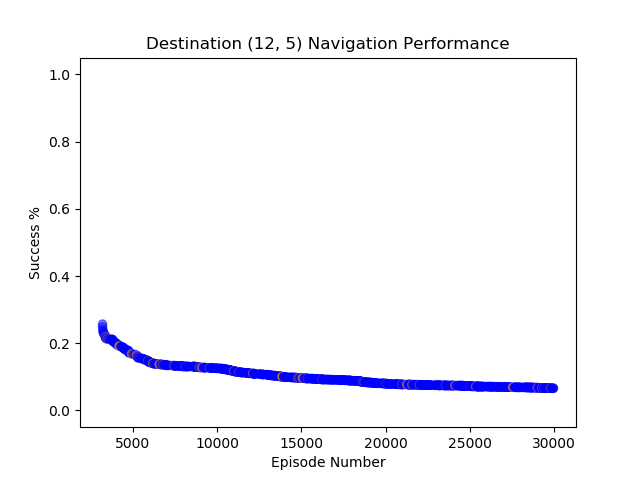
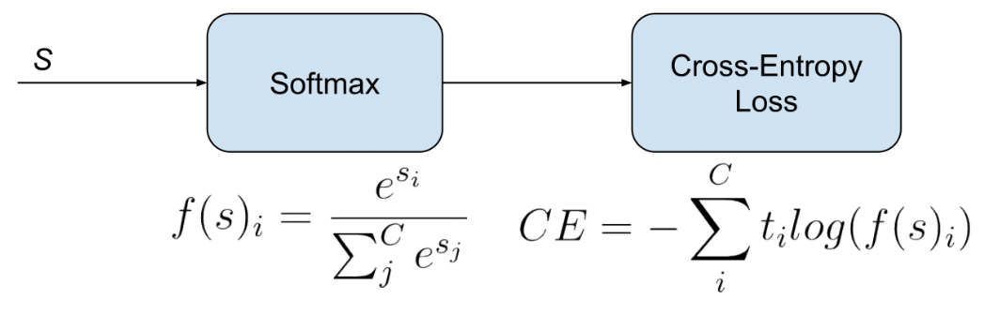
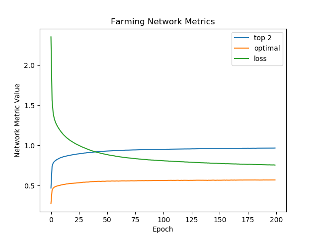
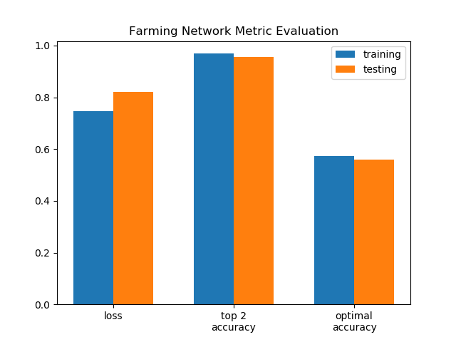

The goal of our project is to make a farm maintenance AI agent that can assist farming john with some of his farming duties. Our agent, FarmerBot, is able to navigate the farm, moving from plot to plot planting and harvesting crops as efficiently as possible. The team’s goal for FarmerBot is to have him achieve a state value of over 700, meaning that the agent has at least a stack of wheat in his inventory, a stack of wheat seeds, and at least one wheat seed planted at each plot of the farm. If FarmerBot can achieve this goal within a reasonable time frame, then we can say we have successfully developed an efficient farming agent for Farmer John.
There are two main networks utilized by our farming agent: a Dueling Double Deep Q Network used in pathfinding, and a simple neural network used in the planting/harvesting decision process for the agent.
This network is comprised of 4 convolutional layers which then split and input into two separate subnetworks; the main and target networks. The main network computes the value function of the state. This function tells us how good it is to be in any given state. The target network computes the advantage function of the state. This function tells us how much better taking a certain action would be compared to others. We sum these values to get our final Q-value. These functions are then combined into one final Q-function in the last layer.
Q(s, a) = V(s) + A(a)
From this we get an output from the network in the range [0,3], where each number corresponds to an action in {front, left, right, back}.
We justify the use of this type of network based on the size of the state space for the attempted problem.
For each plot that is set as a destination, there are (farm_width^2)-(#farmland and water blocks) possible position states.
For our 16x16 farm with 4 standard square plots, there are a total of 7,040 possible states that our agent needs to learn and discover.
Another plus of using this type of network is that it allows the network to easily expand to larger network without sacrificing much in the networks learning power.
Here is the training code for our network.
if total_steps % (pfn.update_freq) == 0:
trainBatch = myBuffer.sample(pfn.batch_size)
Q1 = sess.run(mainQN.predict,
feed_dict={mainQN.scalarInput:np.vstack(trainBatch[:,3])})
Q2 = sess.run(targetQN.Qout,
feed_dict={targetQN.scalarInput:np.vstack(trainBatch[:,3])})
end_multiplier = -(trainBatch[:, 4] - 1)
doubleQ = Q2[range(pfn.batch_size), Q1]
targetQ = trainBatch[:,2] + (pfn.y*doubleQ*end_multiplier)
_ = sess.run(mainQN.updateModel,
feed_dict={mainQN.scalarInput:np.vstack(trainBatch[:,0]),
mainQN.targetQ:targetQ, mainQN.actions:trainBatch[:,1]})
pfn.update_target(targetOps, sess)Additionally, the network takes advantage of Experience Replay. This allows the agent to store it’s experiences, and then randomly draw batches of them to train the network. This should allow the agent to more robustly learn to navigate the environment. In essence, this prevents the network from only learning what it is immediately doing in the environment, and allow it to learn from its past experiences. When the buffer reaches capacity, the oldest experiences are removed as the newest ones are added.
class experience_buffer():
def __init__(self, buffer_size = 40000):
self.buffer = []
self.buffer_size = buffer_size
def add(self, experience):
if len(self.buffer) + len(experience) >= self.buffer_size:
self.buffer[0:(len(experience)+len(self.buffer))
-self.buffer_size] = []
self.buffer.extend(experience)
def sample(self, size, dest):
return np.reshape(np.array(random.sample(self.buffer, size)),
[size, 6])
# s = previous state
# a = action taken from previous state
# r = reward from taking action
# s1 = resulting state from action
# d = whether or not the agent has completed mission
episodeBuffer.add(np.reshape(np.array([s, a, r, s1, d]), [1, 5]))The last important thing in regards to this network is the reward function. For our reward function we…
def get_reward(self,start,end,moved,optimal_path,new_dist,quickest_path):
reward = 0
path, dim = optimal_path
current_dist = new_dist - 1
if current_dist <= 1:
return 100
reward -= current_dist * 0.5
if len(path) <= new_dist:
reward -= 20
else:
reward += 20
if moved == -1:
reward -= 10
else:
reward -= 1
return rewardFor the decision making process of the network we decided to use machine learning and train the network based on a heuristic. At the highest level, this network is looking at the farmland plots and classifies one of these plots as the most optimal destination to navigate to. Essentially each plot is a ‘class’ and the network needs to choose the best one. We generated a large dataset by simulating planting actions on our farm and then writing those values to a csv file. The decision heuristic we used in generating the data was fairly simple: Travel to the closest farm block that either has no seed planted or has a full grown wheat. After we generated this data, we trained a simple deep neural network on the data. The network consists of 4 dense relu activation layers and a sigmoid activation layer.
classifier = Sequential()
classifier.add(Dense(64, activation='relu',
kernel_initializer='random_normal'))
classifier.add(Dense(48, activation='relu',
kernel_initializer='random_normal'))
classifier.add(Dense(40, activation='relu',
kernel_initializer='random_normal'))
classifier.add(Dense(32, activation='relu',
kernel_initializer='random_normal'))
classifier.add(Dense(32, activation='sigmoid',
kernel_initializer='random_normal'))
classifier.compile(optimizer='adam', loss='categorical_crossentropy',
metrics = [top_2_accuracy, 'categorical_accuracy'])The network outputs a number in the range of [0, num_plots-1] representing the index of the farming plot that the agent should navigate to. This return values work as the order of the farmland is constant across all instances of any farm generated with our code. This model should be fairly easy to scale up as well but may lose much of its learning power in doing so.
There are three things that we need to evaluate to see if our agent actually performed well: pathfinding performance, decision performance, and productivity performance.
For the pathfinding performance we want to see how often an agent successfully navigates to some destination.
Then, to get a better picture of the agent’s location, visualize the agent’s movement using heatmaps.
First we will graph the success of the agent for each destination to see how well it learned to navigate to specific locations.
We take the rolling average of the nearest 100 episodes to get a better idea of how the agent performs as they learn,
as opposed to a global success average for each destination which doesn’t accurately portray the temporality of the learning process.
We have slightly improved our agent’s navigating performance and it makes it to most plots with a fair success rate.
We can see that our agent has better learned how to navigate to some plots that it had difficulty with earlier in the quarter. However there are still some plots the agent has difficulty navigating to.
   
Upon further investigation into this,
it seems that the agent tends to start further away from these plots and sees less successes during training as a result of that.
This could be resolved by simply increasing the step limit for the agent, giving it more time to explore and find these plots.
While we do have the success rates of the agent,
it does not give us much information about where the agent spends its time while navigating to some plot destinations.
In order to get this information we generated heat maps that show how often the agent moved to, or attempted to move to,
some block on the farm. Based on this we can get an idea of how optimally the agent learned to navigate to each of the plots,
and gain some insight on how to improve the model. We are looking for a large concentration of steps near the desired destination plot.
As we can see from the heatmaps above, the agent has learned to navigate the environment fairly optimally. This shows that the agent is learning in the environment and has begun to generalize the features and movements required, although it may not be the most efficient. It is also worth keeping in mind that these failures are only after 4*len(optimal path from start) steps. In testing, the agent would eventually make it to all the destination plots. We believe that with some tweaks in the training process we can easily resolve this issue and greatly improve our agent’s performance.
The evaluation for the decision network is a little simpler as we are just evaluating loss and accuracy metrics. Our agent uses a categorical cross-entropy loss function. This loss function is similar to a normal cross-entropy loss with the addition of a softmax activation. This type of loss function is generally used in multi-class classification problems such as this.
We also have two different accuracy measures that we are evaluating this model on. The first is the optimal classification accuracy which represents the models accuracy of choosing the single best plot to navigate to. We are also evaluating this model based on it’s top 2 classification accuracy. If the result class is within the top two predictions of the network then we consider it a successful classification. This takes into account states in an environment where there may be multiple destinations with the same optimal value. This happens quite often in our farm due to its symmetrical nature. We graphed these metrics over the training data and compared our results to the metric performance on the testing data.
 Based on these graphs we can see that the optimal loss only reaches an accuracy of about 50%. But, when we relax our assumptions a little bit to include the top 2 predictions, we achieve an accuracy of about 95%. Comparing the top 2 metric to our loss curve we can see that the loss is above. Additionally the agent performs almost as well on the testing data as it does on the training data.
To evaluate the performance of our agent in the environment there are three main metrics: path optimality, choice optimality, and state value. The path optimality metric provides a number to evaluate if the agent travelled more or less blocks than the optimal path length. Values closer to zero means that the path is more optimal while values further from zero mean that the path is less optimal. The choice optimality metric lets us know how optimal of a choice the agent took. For our purposes, an optimal choice is when an agent chooses a destination that is either empty or has a full grown wheat crop in the plot. Really the only counterproductive measure our agent can take is harvesting wheat seeds that are not ready to yield wheat. Finally we have the state value metric which gives the most direct information as to how the agent is optimizing in the environment. This metric was recorded every thirty seconds over a thirty minute time period. Here are the item values for our state:
In Inventory:
Wheat seed = 1
Wheat = 7
On Farm:
Wheat seed = 2
Empty plot = -1
Fully grown wheat = 5
Now we can compare the values of these metrics between one of our mid-level performing agents and one of our best performing agents from earlier in the quarter.
By looking at the graphs we can see that the line for the bad agent is much shorter than the line of the good agent.
We intentionally graphed this information over the number of destinations that the agent navigated to.
This makes it obvious that the bad-agents performance was much worse as it navigated to under half the number of destinations as the good agent.
This was mainly due to the poor performance in pathfinding and the decision network often choosing destinations that were far away.
Our best agent reached our desired state value of 700 and far exceeded it within our 30 minute time interval.
Even the poorer performing agent managed to obtain a state value of 700 in the 30 minute time interval.
Across the board, the better performing agent had much more stable values for all if its metrics which lead to a good performance.
Here are the normalized metric values for each of our agents:
Based on our experiments and data, we can conclude that FarmerBot has learned how to efficiently maintain Farmer John’s farm. Now Farmer John can relax, spend time with his wife and grandkids, and enjoy the few remaining years he probably has left. Luckily FarmerBot will be able to run for many decades after his passing, continuing to support his family.